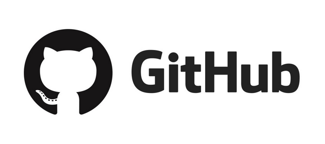

The group has worked to produce mock-up versions of a website and mobile applications that would help illustrate how the recruitment project could be implemented. The group has used a variety of tools throughout the project; GitHub for hosting the mock-up website as well as the group page, Microsoft Teams for communication, Atom and Visual Studio Coding for writing HTML (and other code) and Marvel Prototypes for the mobile application artefacts.
The GitHub commit trail does not accurately reflect the groups work as not everyone contributed via GitHub.
(Source: Medium)